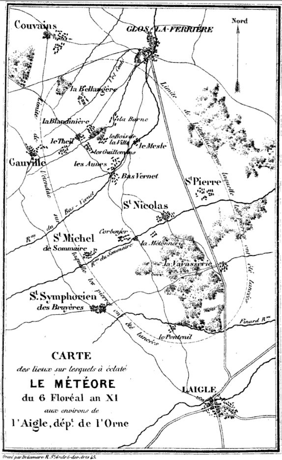

Le ministre de l'Intérieur m'ayant invité à me rendre dans le département de l'Orne pour prendre des renseignements exacts sur le météore qui a paru aux environs de l'Aigle le 6 floréal dernier, je me suis empressé de remplir ses intentions, et je vais rendre compte à la classe des observations que j'ai recueillies. Je désire que l'importance du sujet fasse excuser la multiplicité des détails dans lesquels je vais entrer.
Depuis que l'attention des savants s'est dirigée vers l'examen des masses minérales que l'on dit être tombées de l'atmosphère, toutes les ressources de la critique et de l'expérience ont été employées pour constater cet étonnant phénomène et jeter quelque lumière sur sa cause. En même temps que l'analyse chimique déterminait les éléments de ces masses, les séparait des produits naturels jusqu'à présent connus, et découvrait dans leur identité parfaite la preuve, ou du moins la grande probabilité d'une origine commune, on recueillait tous les récits qui pouvaient avoir quelques rapports au même fait ; on consultait les écrits des anciens, dont l'autorité a été trop souvent suspectée, et que l'on reconnaît de plus en plus pour des témoins fidèles, à mesure que l'occasion se présente de vérifier leurs observations. Pour compléter ces recherches et achever de faire sentir toute leur importance, des hypothèses ingénieuses ont été imaginées, de manière à satisfaire, d'après les lois de la physique, aux phénomènes jusqu'alors observés. Enfin les savants de toutes les classes, de tous les pays, ont réuni leurs efforts sur cette grande question, guidés, non par une rivalité jalouse, mais par le noble amour de la vérité.
Sans doute ce concours unanime sera remarqué dans l'histoire des sciences. Il offre à la fois le résultat et la preuve de leurs progrès. C'est un grand pas de fait dans l'étude de la nature que de savoir examiner un phénomène dont on ne voit encore aucune explication complète et cette sorte de courage n'appartient qu'aux hommes les plus éclairés. Nous devons donc remercier notre confrère Pictet, qui nous a donné le premier cet exemple dans la question actuelle, en nous communiquant les recherches des chimistes anglais ; recherches qu'une décision précipitée aurait pu faire traiter de chimériques, mais qui furent discutées dans le sein de la classe avec cet empressement réservé, par lequel on évite également d'écarter les vérités nouvelles, et d'accueillir les erreurs. Qu'importent en effet les préjugés de ceux à qui tout manque pour se former une opinion ? Toujours, dans les questions douteuses, l'ignorant croit, le demi-savant décide, l'homme instruit examine : il n'a pas la témérité de poser des bornes à la puissance de la nature. Suivons donc avec zèle, et sans que rien nous arrêle, le phénomène qui nous occupe maintenant ; et s'il arrive enfin, comme je l'espère, que nous réussissions à le mettre hors de doute, n'oublions pas que c'est l'envie de tout expliquer qui l'a fait rejeter si longtemps.
De toutes les probabilités recueillies jusqu'à présent sur la chute des masses météoriques, la plus forte résulte de l'accord qui existe entre l'identité de leur composition et l'identité d'origine que les témoignages leur attribuent exclusivement. Cet accord, déjà vérifié par un grand nombre d'observations, donne à la probabilité dont il s'agit une valeur très approchante de la certitude, et qui n'est nullement infirmée par les objections que l'on a tirées du peu de lumières des témoins ; car, en raison même de ce peu de lumières, les témoignages devraient, si le fait était faux, s'appliquer à des substances diverses, à des circonstances dissemblables ; et dans un sujet de cette nature, où l'intérêt particulier n'entre pour rien, la chance du concours des témoins est unique, tandis que celle de leur divergence est infiniment multipliée.
Cependant il était fort à désirer que le phénomène fût une fois constaté d'une manière irrécusable, et que toutes ses particularités fussent recueillies avec fidélité, autant pour achever d'établir la certitude morale de son existence, que pour connaîîactement les circonstances qui le caractérisent, et qui sont également nécessaires pour remonter, s'il est possible, jusqu'à sa cause, ou du moins pour empêcher que l'on ne s'égare en la cherchant.
Convaincu de cette vérité, j'ai senti que l'exactitude et la fidélité la plus scrupuleuse pouvaient seules rendre utile aux sciences la mission dont j'étais chargé. Je me suis considéré comme un témoin étranger à tout système ; et, pour ne rien hasarder de ce qui pourrait ôter quelque confiance aux faits que je vais rapporter, je me bornerai dans ce mémoire à les exposer tels que je les ai recueillis, et, en développant les conséquences immédiates qui résultent de leurs rapports, je m'abstiendrai même d'examiner en quoi elles se rapprochent ou s'écartent des hypothèses que l'on a imaginées.
Avant de commencer ma recherche, je crus nécessaire de classer méthodiquement les faits sur lesquels je devais principalement diriger mes observations ; en conséquence je les réunis dans le tableau suivant :
Arguments physiques tirés de l'existence des pierres météoriques entre les mains des habitants du pays ; — des traces ou des débris qui auraient été laissés ou occasionnés par le météore ; — des circonstances minéralogiques et géologiques du pays.
Arguments moraux tirés du témoignage des personnes qui ont vu et entendu le météore ; — qui ont entendu le météore sans l'avoir vu ; — qui, étant sur les lieux, ont cherché et recueilli des renseignements sur l'existence du météore et sur ses effets.
Avant de partir, je recueillis sur ces diverses questions tous les renseignements que je pus me procurer. Je priai M. Haüy de vouloir bien m'éclairer de ses lumières sur ce qui concernait la minéralogie du pays que j'allais parcourir. M. Coquebert Montbret correspondant de la classe, me fournit les connaissances qui m'étaient nécessaires sur la géographie physique du même pays. Enfin M. Fourcroy voulut bien me donner une copie des lettres qu'il avait reçues de l'Aigle relativement à l'apparition du météore.
Je partis de Paris le 7 messidor, emportant avec moi une boussole, une carte de Cassini, et un échantillon de la pierre météorique de Barbotan, qui avait été remis sur les lieux à notre confrère Cuvier : je me proposais de m'en servir comme terme de comparaison, et de voir quelle origine lui assigneraient les habitants du canton où l'on disait qu'il en était tombé de semblables.
Mais je ne me rendis pas directement dans ce lieu même. Si l'explosion du météore avait réellement été aussi violente qu'on nous l'annonçait, on devait en avoir entendu le bruit à une très grande distance. Il était donc conforme aux règles de la critique de prendre d'abord des informations dans des lieux éloignés, sur ce bruit extraordinaire, sur le jour et l'heure auxquels on l'avait entendu, d'en suivre la direction, et de me laisser conduire par les témoignages jusqu'à l'endroit même où l'on disait que le météore avait éclaté. Je devais rassembler ainsi, dans une grande étendue de pays, des renseignements comparables ; car, sur le bruit même et les circonstances de l'explosion, les témoignages devaient s'accorder, quelque part qu'ils fussent recueillis. D'ailleurs tous les récits relatifs aux masses météoriques font précéder leur chute par l'apparition d'un globe de feu. Il était important de savoir si le météore de l'Aigle avait été accompagné des mêmes circonstances ; et c'était loin du lieu de l'explosion que je pouvais m'en assurer.
Guidé par ces considérations je me rendis d'abord à Alençon, chef-lieu du département de l'Orne, situé à 15 lieues au sud-ouest de la ville de l'Aigle.
Chemin faisant, le courrier de Brest à Paris me dit que, le mardi 6 floréal dernier, à 9 lieues par delà Alençon, entre Saint-Rieux et Pré-en-Puil, il vit dans le ciel un globe de feu qui parut, par un temps serein, du côté de Mortagne, et sembla tomber vers le nord. Quelques instants après on entendit un grand bruit semblable à celui du tonnerre ou au roulement continu d'une voiture Sur le pavé. Ce bruit dura plusieurs mn, et fut sensible, malgré celui de la chaise de poste qui roulait alors sur la terre. L'heure était celle de , et le courrier me dit qu'il l'avait observée aussitôt à sa montre, parce que cette vue l'avait fort étonné. Il ajouta qu'en arrivant à Alençon il avait raconté ce fait dans la maison où il était descendu ; et cela m'a été confirmé depuis. Par la marche de ce globe de feu, par le bruit, et surtout par l'heure, je jugeai que c'était le commencement du météore de l'Aigle.
A Alençon on avait entendu parler vaguement de ce phénomène, mais on n'avait rien vu ; et aucun bruit extraordinaire ne s'était fait remarquer : ce qui n'est pas étonnant dans une grande ville, au milieu du tumulte d'un jour de marché. Le préfet, l'ingénieur en chef des ponts et chaussées, les professeurs de l'école centrale, n'avaient aucune connaissance du météore. Mais si ces citoyens ne purent pas me donner des renseignements directs sur cet objet, ils m'en fournirent d'autres non moins utiles, en me permettant de visiter leurs collections. M. Barthélemy, ingénieur en chef, homme aussi distingué par ses connaissances qu'estimé dans le pays par son caractère, s'occupe depuis 5 ans à rassembler des échantillons de toutes les substances minérales qui se trouvent dans le département de l'Orne, afin d'y chercher les matériaux nécessaires à l'industrie manufacturière ou aux constructions civiles. Dans cette collection que j'ai parcourue, rien ne ressemble aux masses météoriques, et M. Barthélemy lui-même, auquel je laissai un échantillon de celle qui est tombée en 1790 à Barbotan, n'avait jamais rien vu qui s'en rapprochât. Je me trouvais ainsi éclairé sur un des points les plus importants de ma mission. Je visitai pareillement la collection et les cabinets de l'école centrale, et si je n'y trouvai rien qui fût analogue à l'objet de mes recherches, j'en rapportai du moins l'estime la plus sentie pour le zèle, les efforts et la persévérance des professeurs qui composent cet établissement.
M. Lamagdelaine, préfet, n'ayant pu me donner de renseignements par lui-même, me fournit avec beaucoup de complaisance tous les moyens d'en obtenir à l'Aigle et dans les divers endroits où je m'arrêterais. Le bibliothécaire de l'école centrale, jeune homme plein de talent et d'activité, voulut bien aussi, sur ma demande, prendre quelques informations relativement au météore de l'Aigle. Il ne put recueillir que de simples récits transmis de bouche en bouche, mais qui cependant s'accordaient entre eux et avec ce que nous savions déjà. N'ayant plus rien à espérer pour l'objet de ma mission, je quittai Alençon le 10 messidor et me mis en route pour l'Aigle, avec un guide actif et intelligent. Je me proposais de m'arrêter dans tous les endroits où je pourrais espérer des réponses à mes questions ; j'avais même le dessein de m'écarter vers les habitations que j'apercevrais à quelque distance de la route.
Le premier endroit habité que nous rencontrâmes est Seez, petite ville à 10 lieues au sud-ouest de l'Aigle. On y avait entendu le bruit du météore ; on en indiquait précisément le jour, l'heure et les diverses circonstances. C'était comme un coup de tonnerre très fort qui semblait partir du côté du nord, et dont le roulement, accompagné de plusieurs explosions successives, dura 5 ou 6 mn. Des personnes qui se trouvaient alors sur le cours crurent d'abord que c'était le bruit d'une voiture roulant sur le pavé et venant d'Argentan ou du bourg de Merleraut; elles ne furent désabusées qu'en ne voyant rien arriver, quoique le bruit continuât. Ces personnes furent d'autant plus étonnées que le ciel était parfaitement serein, sans le moindre nuage, et qu'on n'y remarquait rien d'extraordinaire. On disait de plus que des voyageurs venant de Falaise et de Caen avaient entendu fortement la même explosion, et qu'ils avaient eu grand'peur ; on ajoutait qu'il avait paru un globe de feu du côté de Falaise, et qu'on avait remis au sous-préfet d'Argentan une pierre qui était tombée du ciel.
Ces informations me donnaient lieu de penser que les effets du météore s'étaient étendus sur un espace beaucoup plus considérable que nous ne l'avions imaginé. Comme mon but était d'abord de circonscrire exactement cet espace, je suivis les indications que je venais de recevoir, et me dirigeai vers Argentan.
Il y avait déjà quelque temps que nous étions sur cette route lorsque nous rencontrâmes un homme de la connaissance de mon guide, et qui me parut, comme lui, très-intelligent. Cet homme, interrogé sur le phénomène dont je cherchais les traces, s'en rappela très bien le jour et l'heure. Il était occupé à écrire lorsqu'il entendit l'explosion. Sa fenêtre étant ouverte et donnant du côté du nord, il avait levé la tête pour savoir d'où venait ce bruit ; mais, à son grand étonnement, il avait vu le ciel serein et n'avait rien aperçu dans l'air. Il ajouta que des gens revenus de Caen y avaient entendu le même bruit à la même heure, mais qu'il n'était point tombé de pierres de ce côté ; que celle qui avait été remise au sous-préfet d'Argentan était venue d'ailleurs, et qu'en général ce bruit lui avait semblé partir du nord-ouest, et s'étendre parallèlement à la route d'Argentan à Falaise.
C'était précisément la direction indiquée par les lettres que nous avions reçues. Sur ces renseignements nous rebroussâmes chemin et reprîmes lî de l'Aigle, bien certains de ne rien laisser en arrière.
Nous nous arrêtâmes d'abord à Nonant, village situé à 8 lieues ouest-sud-ouest de l'Aigle. Les habitants ont très distinctement entendu l'explosion du météore. Elle les a fort épouvantés ; ils la comparent au bruit d'une voiture roulant sur le pavé, ou à celui d'un feu violent dans une cheminée. Des employés aux barrières, qui étaient couchés sur le bord de la roule, se relevèrent tout effrayés. Ils ne virent rien dans l'air, qui était serein. Il n'est point tombé de pierres dans cet endroit.
De Nonant nous allâmes au bourg de Merlcraut. Chemin faisant nous rencontrâmes des bergers qui étaient dans, la campagne. Je les interrogeai, en leur demandant s'ils n'avaient pas eu bien peur d'un bruit extraordinaire qui s'était fait entendre il y avait environ 2 mois. Ils me répondirent affirmativement, m'indiquèrent exactement le jour, l'heure et la direction du bruit. Ils avaient été également surpris de voir le ciel serein. D'autres paysans que j'interrogeai sur la route me firent les mêmes rapports.
Au bourg de Merleraut, à 7 lieues ouest-sud-ouest de l'Aigle, je recueille les mêmes récits ; mais le bruit de l'explosion et la frayeur qu'elle avait produite s'étaient accrus en raison de la proximité. Des hommes, des femmes, des enfants que j'interrogeai, s'accordèrent exactement pour le jour, l'heure et la direction du météore. Ils n'avaient rien vu dans l'air et le ciel était serein. Des chevaux qui étaient dans une cour, revenant des champs, et encore attelés, sautèrent tout effrayés par-dessus une haie et s'enfuirent dans la rue : tant était grande la force de l'explosion, quoiqu'à une distance de plus de 7 lieues. Il n'était point tombé de pierres dans ce bourg ; mais on avait entendu dire qu'il en était tombé du côté de l'Aigle, et on me donna un échantillon d'une de ces pierres qui avait été apportée comme une curiosité par un roulier. C'était en effet un morceau pareil à ceux que l'on nous avait envoyés.
De Merleraut nous allâmes à Sainte-Gauburge. Sur la route, j'interrogeai une foule de paysans, tant passagers que travaillant aux champs. Hommes, femmes, enfants, tous ont entendu l'explosion le même jour et la rapportent à la même heure, un mardi, entre et .
Un petit chaudronnier de 10 à 12 ans, qui faisait route avec sa tôle et ses outils sur le dos, écoutait une femme du paysà qui je demandais des détails de l'explosion. Oh ! Monsieur, me dit-il, on l'a entendue beaucoup plus loin ; on l'a entendue à trois lieues d'Avranches. — Vous avez donc ouï dire cela ? — Monsieur, je le sais mieux que par ouï-dire, parce que j'y étais. — Il y a trente-six lieues d'Avranches à l'Aigle.
Dans le village de Sainte-Gauburge, à quatre lieues ouest-sud-ouest de l'Aigle, les habitants ont tous entendu l'explosion le même jour et à peu près à la même heure que partout ailleurs ; mais il n'est point tombé de pierres météoriques dans cet endroit. Cependant, on avait entendu parler de celles qui étaient tombées près de l'Aigle et plusieurs habitants du lieu en possédaient des échantillons. On me conduisit à une chaumière hors du village, où je trouvai un paysan des environs qui en avait une entre les mains. Je lui montrai d'abord celle de Barbotan, et il la reconnut aussitôt pour être tombée du ciel. Il me montra ensuite celle qu'il avait : elle était en tout semblable aux nôtres et pouvait peser environ 0k 48 (1 livre). C'était sa femme qui l'avait ramassée devant sa porte, où elle était tombée et s'était enfoncée en terre. La pierre portait encore des traces de cette chute et le paysan me les fit remarquer. Il paraissait tenir à cette curiosité : je ne la lui demandai point. Il me dit qu'il était du village de Saint-Sommaire. J'ai reconnu depuis que c'est le canton où il en est tombé le plus.
Un vieillard qui se trouvait là me dit qu'étant alors à travailler dans un champ près de l'Aigle, il avait vu dans l'air un petit nuage d'où partaient des explosions qui se succédèrent pendant plusieurs mn ; il avait entendu des pierres siffler et tomber.
De Sainte-Gauburge à l'Aigle j'interrogeai plusieurs paysans qui s'accordèrent tous avec les rapports que j'avais déjà recueillis. La nuit qui survint m'empêcha de multiplier davantage ces informations, qui d'ailleurs n'auraient pu me rien apprendre de nouveau, puisque c'était de l'autre côté de l'Aigle que le météore avait éclaté. J'arrivai dans cette ville à , le jour même de mon départ d'Alençon.
Je me rendis aussitôt chez notre confrère Leblond ; mais je ne pus le voir. Je sus d'ailleurs que toute la ville avait entendu, au jour et à l'heure indiqués, un bruit effroyable. Il n'était point tombé de pierres à l'Aigle même, on en avait seulement entendu parler. Des personnes qui étaient alors à Caen m'assurèrent qu'on y avait entendu le même bruit à peu près à la même heure, et qu'on avait vu de plus un globe de feu qui avait causé une grande frayeur.
Le lendemain de mon arrivée, je me présentai chez notre confrère Leblond; je fus aussi heureux que flatté de trouver en lui les lumières d'un savant et la bienveillance d'un ami.
M. Leblond et son beau-frère M. Humphroy, ancien militaire, avaient tous 2, ainsi que le reste de leur famille, entendu le bruit du météore. C'était comme un roulement de tonnerre qui dura sans interruption pendant environ 5 mn, et qui était accompagné d'explosions fréquentes semblables à des décharges de mousqueterie. Dans le premier moment, on l'avait pris pour le bruit d'une voiture qui passait en roulant sur le pavé, et pour celui que produit un feu violent dans une cheminée.
En rapprochant ces récits, faits par des hommes éclairés, de ceux que nous avons recueillis dans les campagnes sur une étendue de plus de 10 lieues de rayon, nous voyons qu'ils sont absolument d'accord pour le jour, l'heure et la nature de l'explosion. Nous pouvons donc, avec toute certitude, en déduire les conséquences suivantes :
II y a eu aux environs de l'Aigle, le mardi 6 floréal an XI, vers une heure après-midi, une explosion violente qui a duré pendant 5 ou 6 mn, avec un roulement continuel. Cette explosion a eté entendue à près de 30 lieues à la ronde.
Si nous rapprochons le récit fait par le courrier de Brest, relativement au globe de feu qu'il a aperçu, de ce qu'ont dit les voyageurs venus de Caen et de Falaise, et de ce que contiennent les lettres écrites de cette dernière ville le jour même de l'explosion, nous trouverons que ces récits s'accordent pour le jour, l'heure et la direction de ce météore.
J'ai su depuis, par d'autres renseignements, que le même phénomène a été vu à peu près au même instant à Pont-Audemer et aux environs de Verneuil.
De ces témoignages réunis on peut encore déduire comme certaine cette 2ᵉ conséquence :
Le mardi 6 floreal an 11, quelques instants avant l'explosion de l'Aigle, il a paru dans l'air un globe lumineux anime d'un mouvement rapide. Ce globe n'a pas été observé à l'Aigle, mais il l'a été dans plusieurs autres villes environnantes et très-distantes les unes des autres.
J'ai pris toutes les mesures nécessaires pour avoir des renseignements précis et multipliés des différents lieux où l'on a aperçu ce phénomène, afin d'en déduire la marche qu'il a tenue, et de le suivre, s'il est possible, dans toute l'étendue de son cours. Mais en attendant, si l'on considère le jour, l'heure auxquels il a été observé, la route qu'il a prise et l'explosion qui a succédé à son apparition, nous en tirerons avec autant de certitude cette 3ème conséquence :
L'explosion qui a eu lieu le G floréal aux environs de l'Aigle, a eté la suite de l'apparition d'un globe enflammé qui a éclaté dans l'air.
Et il est à remarquer que ces résultats s'accordent parfaitement avec les descriptions que l'on a déjà faites des météores auxquels on attribue la chute de masses minérales.
Je viens maintenant à la question même de la chute de ces masses ; et comme c'était là la partie la plus importante du phénomène, c'est celle aussi à laquelle j'ai donné le plus de soin, de détail et de temps.
Les premiers renseignements que je reçus à l'Aigle sur cet objet me furent donnés par M. Humphroy, et sont relatifs à une pierre pesant 8k 56 (17 livres 1/2), que l'on dit être tombée à la Vassolerie, village situé à 1 lieue au nord de l'Aigle. M. Humphroy, guidé par le bruit public, était allé sur les lieux le jour même, d'après l'invitation de son beau-frère M. Lehlond. Il avait encore vu les paysans assemblés autour du trou que la pierre avait fait en tombant. Elle était déjà réduite à 6k 1 (12 livres 1/2), parce que tout le monde s'empressait de s'en procurer des morceaux. M. Humphroy obtint facilement ce qui en restait, et le porta à son frère, qui l'envoya de suite à Paris. J'en possède un échantillon bien caractérisé.
M. Leblond, saisissant l'importance de ce phénomène, se transporta aussitôt sur les lieux. Il vit encore les paysans assemblés ; il remarqua avec eux la profondeur du trou, qui était de 0m5 (18 à 20 pouces) ; il vit la terre lancée autour à plus de 4m86 (15 pieds) de distance. Il retira du fond du trou 3 gros silex qui paraissaient avoir empêché la pierre de pénétrer à une plus grande profondeur.
J'ai vu depuis avec lui cette trace effrayante du météore, j'ai entendu les récits des propriétaires de cetle habitation, j'ai entendu les témoignages des enfants qui étaient restés dans la maison lorsque la masse tomba à 20 pas d'eux ; et voici les renseignements que j'en ai recus.
Le père de ces enfants revenait de l'Aigle avec sa femme et sa belle-fille ; ils entendirent tout à coup dans l'air un bruit de tonnerre extraordinaire, accompagné d'un roulement semblable à celui d'un grand feu dans une cheminée. Il n'y avait presque point de nuages dans l'air, si ce n'est un petit nuage noir et quelques autres comme on en voit fréquemment ; mais point d'apparence d'orage. Ce bruit semblait partir du petit nuage, et s'éloignait devant eux en soufflant et bourdonnant toujours. Ils étaient tous 3 extrêmement effrayés. La jeune femme se trouva mal et le père n'osait parler. Ce bruit effrayant ne dura que quelques mn. En arrivant chez eux ils virent tous leurs voisins assemblés, et crurent qu'il était arrivé quelque malheur pendant leur absence : ils s'approchèrent, et on leur montra la masse que l'on venait de déterrer. Le père la pesa aussitôt : son poids était de 8k65 (17 livres 1/2), comme je l'ai rapporté.
Le fils, revenu des champs, me donna des détails encore plus précis : c'étaient lui et ses frères qui étaient accourus les premiers au bruit de la chute de la pierre, et qui l'avaient déterrée.
Il dînait avec ses frères et sœurs sous un noyer qu'il me montra : tout à coup ils entendirent au-dessus de leur tête un bruit de tonnerre effroyable, accompagné d'un roulement si continuel qu'ils se crurent prêts à périr. Le jeune homme dit à ses frères de se coucher par terre, de peur d'être emportés. Alors ils entendirent dans le pré voisin un terrible coup, qu'ils comparent à celui d'un tonneau plein qui tomberait de haut. Ils coururent à cet endroit, dont ils étaient séparés par une haie, ils virent cette pierre, qui était enfoncée si profondément qu'elle avait fait sourdre l'eau.
J'ai examiné avec notre confrère Leblond le trou d'où cette masse a été tirée. Il est situé à l'entrée d'un herbage humide, et dont le sol ne renferme assurément rien de semblable parmi ses produits naturels. Peut-on raisonnablement supposer qu'une masse aussi considérable eût existé depuis longtemps sans avoir été remarquée, dans un lieu où l'on passait fréquemment ; que tout à coup les enfants de la maison et les voisins se fussent réunis, par un simple hasard, pour affirmer qu'ils avaient entendu tomber dans ce même lieu quelque chose de, très-lourd, avec un très-grand bruit ; que toutes ces circonstances eussent coïncidé avec ce qui se passait au même instant à 2 lieues de là, et qu'enfin aucun des spectateurs ne se fût rappelé avoir vu précédemment cette pierre ? Voilà pourtant toutes les particularités dont il faudrait supposer la réunion pour infirmer la vérité de ce témoignage.
Observons encore une circonstance très-importante. Puisque les paysans avaient sur le lieu même, et en peu d'instants, détaché tant de fragments de cette masse minérale, il paraît qu'elle n'avait pas alors l'excessive dureté que nous lui trouvons aujourd'hui. En effet, notre confrère Leblond assure que, lorsqu'elle fut portée chez lui, elle était encore très-facile à casser et les petits morceaux que l'on en séparait s'égrenaient sous les doigts. Voilà assurément un fait attesté par un témoin oculaire digne de toute confiance. La même chose m'a été affirmée depuis dans 20 endroits différents, et par tous ceux qui ont manié ces substances dans les premiers moments. Or un passage aussi prompt d'un état friable à une solidité complète annonce la présence d'une cause qui avait récemment troublé leur agrégation. Cela s'accorde donc avec les témoignages, pour prouver que ces masses minérales sont étrangères aux lieux où elles se trouvaient alors, et qu'elles y avaient été nouvellement transportées.
En revenant de la Vassolerie, je pris des renseignements propres à me faire connaître la route que le météore avait suivie et l'étendue de pays sur laquelle il paraissait avoir éclaté. Ces premières informations me donnèrent pour limites la ville de l'Aigle, d'une part, et de l'autre 5 villages, nommés Saint-Antonin, Gloss, Couvain, la Ferté-Fresnel et Gaùville. C'était une étendue de 3 lieues de long sur 2 lieues de large, que je me proposai de parcourir complètement le lendemain.
Je partis à , accompagné d'un guide qui connaissait bien le pays et les habitants. Nous allâmes d'abord au château de Fontenil, où tous les témoignages plaçaient le commencement de l'explosion. Les maîtres étaient absents, îarlai au concierge du château, qui rue parut un homme sensé et digne de foi. Il avait entendu, comme tout le monde, plusieurs coups violents, semblables à des coups de canon, suivis d'un bourdonnement pareil à celui du feu dans une cheminée. Tout à coup on avait entendu sur la terre de l'enclos qui environne le château un grand coup sourd, comme d'un grand arbre qui tomberait après avoir été ébranché. Les ouvriers, qui travaillaient dans un bois voisin, accoururent à ce bruit ; les bestiaux, effrayés, se précipitèrent vers le lieu où s'était fait la chute. Un jeune homme de 15 ans, qui travaillait à 10 pas de là, sous un hangar, dit avoir vu tomber une pierre : on s'approcha, et on en tira une du poids de 3 livres. Elle avait fait dans la terre un trou de 18 pouces de profondeur. Le concierge l'a mesuré après avoir enlevé la pierre avec soin, pour la déposer dans les archives de la maison avec un récit du fait. J'ai vu le jeune homme qui est témoin oculaire ; j'ai vu aussi le trou fait par la pierre ; j'ai vu cette pierre elle-même, et je rapporte un échantillon que l'on m'a permis d'en séparer.
Le sol de l'enclos, que l'on nomme dans ce pays une cour, est de terre franche, humide et recouvert de gazon. Au-dessous de la terre végétale on trouve des cailloux : rien n'annonce qu'on y trouve naturellement des substances semblables aux masses météoriques et tous les habitants de la maison sont bien certains de n'en avoir jamais vu.
J'ai aussi un échantillon d'une pierre semblable, tombée dans un champ auprès de Fontenil : elle passa en sifflant par-dessus la tête du berger, à qui elle causa une grande frayeur et tomba à 20 pas de lui. Les moutons, épouvantés par le bruit du météore, se serraient les uns contre les autres. On a depuis labouré ce champ, et on n'y a point trouvé d'autre pierre de la même nature. Ces détails m'ont été donnés au Fontenil par un témoin oculaire que l'on m'amena.
Du Fontenil j'allai au hameau de la Métonnerie, et le concierge du château que nous quittions eut la complaisance de nous accompagner jusque dans une ferme qui lui appartient. Les habitants de cette fenue ont vu le nuage au-dessus de leur tête. Leur récit sur le bruit de l'explosion est le même que partout. Ils virent tomber deux pierres dans leur cour, tout auprès d'eux : l'une, dont ils me montrèrent encore la place, sifllait en tombant ; elle était brillante, car la terre fuma tout à l'entour. Ils n'osèrent la retirer que le lendemain, tant ils avaient peur. J'en rapporte un échantillon. L'autre était tombée dans une haie : on la chercha longtemps, mais on ne put la trouver.
Le sol de la Métonnerie est formé d'un peu de terre végétale recouvrant une couche de marne ; au-dessous sont des cailloux dont on se sert pour bâtir.
J'ai aussi un échantillon d'une pierre tombée près de là, dans un lieu que l'on nomme la Marcelière. Elle fut vue par un enfant qui gardait les moutons ; elle tomba à côté de lui. Le morceau que je rapporte m'a été donné par le père même de cet enfant. D'après le volume qu'il m'a désigné, cetle pierre pouvait peser environ 1k96 (3 livres) avant qu'on en eût rien ôté.
De la Métonnerie j'allai au village de Saint-Nicolas-de-Sommaire : je me présentai chez une dame à laquelle on avait porté beaucoup de pierres météoriques ; elle avait autrefois la seigneurie de ce canton. Elle me reçut avec beaucoup d'honnêteté, et me donna par elle-même et par ses gens tous les détails qui étaient parvenus à sa connaissance. Je trouvai chez elle 2 curés, celui du lieu et celui d'un hameau voisin nommé Saint-Michel-de-Sommaire ; il y avait de plus le garde forestier et une femme de confiance anciennement attachée à la maison. Toutes ces personnes, excepté le garde, sont témoins oculaires de la chute des pierres. Celui-ci revenait alors de l'Aigle ; il a seulement vu le météore et entendu le bruit.
Le curé de Saint-Nicolas regardait directement le nuage d'où l'explosion est partie. C'était un carré long, dont le plus grand côté était dirigé est et ouest ; il semblait immobile, et il en sortait un bruit continuel semblable au roulement d'un grand nombre de tambours ; puis on entendait les pierres siffler dans l'air comme une balle qui passe, et tomber sur la terre en rendant un coup sourd. On remarquait très bien que le nuage décrépitait successivement de différents côtés, et chacune de ces explosions ressemblait au bruit d'un pétard. Le curé de Saint-Nicolas a entendu tomber ces pierres, sans les voir dans leur chute ; mais le curé de Saint-Michel m'assura en avoir aperçu une qui tomba en sifllant dans la cour de son presbytère, aux pieds de sa nièce, et qui rebondit de plus d'un pied de hauteur sur le pavé. Il dit aussitôt à sa nièce de la lui apporter ; mais elle n'osa pas et une autre femme qui se trouvait présente la ramassa. Je ne l'ai point vue ; mais ce curé m'a assuré qu'elle était en tout semblable aux autres et ces pierres, dont nous avions sous les yeux un grand nombre de morceaux, sont trop connues maintenant dans ce pays pour que l'on puisse s'y méprendre.
La maîtresse de la maison me donna plusieîces masses que l'on avait vues tomber. J'en rapporte d'autres dont on m'a montré les trous encore récents, et qui portent les empreintes dos terrains où elles sont tombées. Elles sont toutes de la même nature que celles que nous avons déjà, et à cet égard il y a autant de témoins que d'habitants. Il paraît, par les renseignements que j'ai recueiîqu'il est tombé dans cet endroit et dans les environs une quantité effrayante de pierres ; mais quoiqu'elles soient encore fort grosses, puisqu'elles pèsent jusqu'à 0k97 (2 livres), aucune d'elles n'égale celles de la Vassoleric et des environs du Fontenil : circonstance qu'il importe de remarquer.
Tout le monde s'accorde à dire que ces pierres fumaient sur la place où elles venaient de tomber. Portées dans les maisons, elles exhalaient une odeur de soufre si désagréable qu'on fut obligé de les mettre dehors. Un gros morceau que je brisai m'offrit encore très fortement cette odeur, mais dans son intérieur seulement. Dans les premiers jours, ces pierres se cassaient très facilement ; toutes ont depuis acquis la dureté que nous leur connaissons. Ces changements d'état sont autant de preuves physiques qui s'accordent pour faire voir que ces pierres sont étrangères aux lieux où elles se trouvaient alors, ou qu'elles y avaient été récemment transportées.
Ici, comme à la Métonnerie, le sol est de terre franche recouvrant une couche de marne ; toutes les maisons sont bâties en cailloux : jamais on n'y a rien vu de pareil aux pierres météoriques.
Remarquons que les témoignages acquièrent ici une grande force par l'état et les qualités morales des témoins. C'est d'abord une dame très-respectable, qui ne peut avoir aucun intérêt d'en imposer ; ce sont 2 ecclésiastiques, qui ne peuvent, sans aucun motif, avoir l'intention d'altérer la vérité, surtout devant des personnes dont l'estime et la confiance leur sont nécessaires ; enfin, c'est une femme âgée, qui paraît depuis longtemps attachée à ceîson, et qui, persuadée que ce phénomène est un avertissement du ciel, n'aurait pas osé en dénaturer les circonstances, surtout en parlant devant des personnes qu'elle est habituée à respecter. Enfin le témoignage du garde forestier est lui-même un garant de la vérité des autres ; car je savais que cet homme n'avait pas été présent à la chute des pierres, et il ne s'est pas donné non plus comme les ayant vues tomber. Seulement, son emploi l'obligeant à parcourir les champs, il avait eu occasion de remarquer et de déterrer plusieurs de ces masses, qu'il me donna, et dont il me montra les trous encore récents. Il était bien certain de n'avoir jamais rien vu de semblable, et l'on sait combien les gens de cet état sont observateurs.
|  |
De Saint-Nicolas-de-Sommaire, j'allai, conduit par ce garde, au hameau du Bas-Vernet où il demeure, et dans lequel on disait qu'il était tombé un grand nombre de pierres. Voyant le désir que j'avais d'en trouver une moi-même et de la retirer de terre, il me mena dans un petit champ qui lui appartient, et dans lequel il avait remarqué un trou qu'il pensait avoir été fait par une de ces pierres : il avait attendu que la récolte fût faite pour s'en assurer ; mais nous eûmes beau chercher et creuser dans ce trou, nous ne trouvames rien. Si ce fut un désagrément pour moi de voir mon espérance trompée, du moins j'eus une nouvelle occasion de reconnaître la bonne foi de mon guide.
Nous all&aciîensuite dans une ferme voisine, où nous trouvâmes 1 femme âgée et 2 jeunes filles, qui nous déclarèrent toutes 3 avoir vu tomber des pierres et en avoir eu une peur horrible : elles étaient seules en ce moment dans la maison, et s'attendaient incessamment à périr. Elles me montrèrent, dans l'enclos de la ferme, plusieurs trous dont elles avaient extrait des morceaux de ces pierres, et elles m'en remirent un échantillon. C'est toujours la même espèce.
Nous cherchâmes longtemps pour tacher d'en découvrir nous-mêmes quelque reste ; mais ce fut en vain. La terre avait été humectée depuis par les pluies, l'herbe avait crû et les trous mêmes dont on avait extrait des pierres s'étaient déjà remplis presque entièrement. Il était donc très difficile d'en découvrir encore qui auraient échappé aux premières recherches. Nous cherchâmes surtout sous un arbre et dans une haie où l'on en avait entendu tomber entre les branches, et d'où l'on avait vu s'enfuir un oiseau ; mais nous ne trouvâmes rien. J'observai cependant que plusieurs branches de l'arbre et de la haie, situées dans une direction verticale, avaient évidemment souffert.
Après toutes ces recherches infructueuses nous allâmes dans une ferme voisine. On nous y fit encore les mêmes récits sur l'explosion et la chute du météore. Le fils de la maison, âgé de 10 à 12 ans, sa mère, et sa sœur âgée de quinze ou seize, étaient témoins de ces faits. Au milieu de cet effroyable bruit, qu'ils décrivent comme tous les autres, ils virent tomber une grosse pierre qui cassa une branche d'un poirier : le jeune homme courut pour la ramasser ; mais la trouvant enfoncée en terre, il cria à sa sœur d'apporter une bêche. Celle-ci vint ; mais à peine arrivée il lui passa devant le visage une petite pierre qui tomba à ses pieds. Alors elle n'eut rien de plus pressé que de s'enfuir et la pierre ne fut ramassée que lorsque la peur se fut dissipée avec le danger. On m'a montré le poirier, et je rapporte un échantillon de la pierre qui en a cassé une des branches.
Plusieurs autres fermes environnantes m'ont fourni les mêmes témoignages, et partout on a vu les mêmes phénomènes.
Je quittai ce lieu pour me rendre au hameau du Mesle, chez un laboureur nommé Gibon, qui était de la connaissance de
mes guides. C'est un homme de 64 ans, plein de sens et de raison ; il me reçut avec la plus grande cordialité. Lui, sa
famille et ses gens sont témoins oculaires du phénomène ; ils en décrivent exactement les circonstances comme partout
ailleurs. Le roulement ressemblait si bien au bruit du feu dans une cheminée, qu'ils crurent que la maison brûlait, et
qu'ils coururent chercher de l'eau à la mare pour l'éleindre. Nous avons vu, me dit ce vieillard, tomber des
pierres d'en haut. Moi, qui ne suis pas peureux et qui étais fatigué, je ne me suis pas dérangé pour les aller
chercher ; mais mes enfants y coururent et les rapportèrent. Une d'elles tomba près de la mare, et lit peur à une
poule qui se trouvait là ; une autre tomba sur le faîte de la maison et roula jusqu'à terre : nous cr&îes que
c'était notre cheminée qui tombait
. En voyant ce respectable laboureur, on ne pouvait douter que son témoignage
ne fût l'expression exacte de la vérité.
On me donna un échantillon de cette pierre ; on me montra sur le penchant de la toiture le lien de bois qui sert à retenir le chaume, et qu'elle avait détaché. Il était tombé dans le clos beaucoup d'autres pierres que l'on avait ramassées. On m'assurait qu'il y en avait une dans la mare et une autre dans un fossé à demi desséché. Il fallait renoncer à la première ; nous cherchâmes l'autre, mais inutilement.
Le fils de la maison, qui m'avait dejà donné toutes celles qui lui restaient, me dit qu'il en avait trouvé dans un champ, à un quart de lieue de là. Je lui demandai s'il avait pareillement visité tous les champs voisins. Il me répondit qu'il ne l'avait pas fait ; et comme le lieu qu'il indiquait se rapprochait de Saint-Nicolas-de-Sommaire, où je savais qu'il était tombé un grand nombre de ces pierres, je me décidai à entreprendre encore cette recherche, espérant que du moins cette fois je serais plus heureux.
En effet, après avoir cherché environ pendant 1 h, par le soleil le plus ardent, nous en découvrîmes une que je retirai moi-même de la terre où elle était enfouie ; je la tins longtemps brûlante dans ma main, tant était grande la chaleur à laquelle elle était exposée. Elle ressemble parfaitement à toutes celles que nous avions déjà.
Satisfait de cette petite découverte, j'examinai la nature du sol où nous étions et les diverses substances qui s'y trouvent. Je donnai à cet examen un temps et un soin proportionnés à son importance. C'est une terre assez légère, sur laquelle on trouve des cailloux et quelques scories de forge que l'on nomme du laitier. On dit que très anciennement il y a eu dans ce lieu des forges qui ont été abandonnées. Au reste, on sait combien ces scories diffèrent des pierres météoriques, et les paysans eux-mêmes n'y sont pas trompés ; car, aux environs de l'Aigle, ils connaissent aujourd'hui parfaitement ces pierres, et savent très bien les distinguer des autres, qu'ils nomment par opposition des pierres naturelles.
En revenant, mon jeune guide me montra dans les champs un berger qui passait autrefois pour un incrédule, mais que la peur de ce terrible météore a converti.
De retour au village du Mesle, je partis aussitôt pour le bourg de Gloss. C'était un de ceux que mes précédentes informations m'indiquaient comme se trouvant sur la limite du météore. En effet, il n'y était point tombé de pierres, quoiqu'on eût entendu violemment l'explosion au sud-ouest. Je sus qu'il était tombé quelques pierres, mais petites et en très-petit nombre, au hameau de la Belangère, situé à l'ouest de Gloss. Par ces récits et par les informations que je reçus, je me confirmai dans l'opinion qu'il n'était rien tombé dans les villages de Saint-Antonin et de Couvain.
D'après la course que je venais de faire et les renseignements qu'elle m'avait procurés, je connaissais les limites de l'explosion au sud, à l'est et au nord ; il ne me restait plus à parcourir que le côté de l'ouest, et en conséquence lorsque je partis de Gloss, qui est au nord-est de l'Aigle, je me dirigeai vers le sud-ouest.
J'allai d'abord au hameau de la Barne, dans l'habitation qui porte ce nom. Les personnes qui l'habitent avaient entendu le bruit du météore, et en avaient été fort effrayées ; mais se trouvant alors dans leurs maisons, elles n'avaient pas vu de pierres tomber, et ne furent averties de ce phénomène que par leurs fermiers qui en apportèrent des morceaux qu'on venait de trouver dans la cour. J'en reçus un échantillon.
Le maître de la maison m'accompagna jusqu'à sa ferme, dont les gensîrnirent des témoignages beaucoup plus forts. Non-seulement ils avaient vu et entendu le météore, mais les pierres tombaient en sifflant autour d'eux comme la grêle. Ils coururent à la mare, croyant que les bâtiments étaient en feu ; leur peur était telle qu'ils s'attendaient à périr, et ils ne parlaient encore de ce phénomène qu'avec effroi. Toutes les pierres tombées ici sont fort petites : ces gens en avaient tant ramassé qu'ils ont fini par les jeter dans la basse-cour, comme n'offrant aucun intérêt. Cependant, on m'en donna encore plusieurs que l'on avait conservées. Nous cherchâmes longtemps dans les herbages si nous pourrions en trouver encore sur la terre ; mais ce fut en vain ; l'herbe était devenue trop haute. On ne dit pas ici que ces pierres fussent chaudes lorsqu'on les ramassa ; ce qui tient sans doute à leur peu de volume.
J'allai de là au hameau de Boislaville, et je me présentai dans l'habitation qui porte ce nom. Le propriétaire, à qui je m'adressai, est un jeune homme de 28 à 30 ans, qui paraît instruit et bien né ; il a servi pendant la guerre de la réîn, et n'est par conséquent pas susceptible d'être effrayé par un coup de tonnerre. Ces particularités donnant beaucoup de poids à son témoignage, je l'ai recueilli avec une attention particulière, et je le rapporte fidèlement.
Le citoyen Boislaville était au milieu de sa cour, tête nue ; il entendit subitement comme 3 ou 4 coups de canon, suivis d'une espèce de décharge qui ressemblait à une fusillade, après quoi il se lit comme un épouvantable roulement de tambours, accompagné de sifflements très-forts causés par des pierres qui tombaient sur la terre. L'air était tranquille et le ciel serein ; seulement on observait directement au-dessus de la cour un petit nuage noir qui paraissait immobile, et duquel semblait partir tout ce bruit. On ramassa sur-le-champ une grande quantité de pierres météoriques dans l'enclos qui environne la maison : elles étaient toutes extrêmement petites. Le citoyen Boislaville m'en a donné plusieurs morceaux.
La mère du citoyen Boislaville, dame âgée et très-respectable, attestait la même chose avec les mêmes détails. Tous ses gens avaient vu les mêmes effets et leurs récits s'accordaient entre eux. Ils avaient été extrêmement effrayés ; les animaux s'agitaient violemment, et l'on crut que le feu était partout dans la maison. Le citoyen BoislaVille avait pris des informations pour savoir s'il était tombé des pierres au bourg de la Ferté-Frenel ; mais on n'en avait pas vu, et cela s'accorde avec les rapports qui m'avaient été faits d'ailleurs.
Ici, comme à la Barne, le sol est de bonne terre franche, ainsi que celui des champs et des herbages environnants ; on n'y trouve point de cailloux, et l'on y bâtit avec de la brique. Le citoyen Boislaville est bien certain qu'on n'a jamais vu dans le pays de pierres semblables à celles qui sont tombées.
Voilà donc un témoin que son caractère moral met à l'abri des illusions de la crainte et au-dessus du soupçon d'infidélité. Son récit coïncide dans les plus petits détails avec ce que l'on rapporte partout aux environs. Un pareil accord pourrait-il exister, s'il n'avait la vérité pour base ?
De Boislaville je passai à la ferme de la Blandinière, où l'on m'avait dit qu'il était tombé des pierres météoriques en assez grande quantité, mais fort petites. Je ne trouvai dans la maison qu'une femme âgée qui ne put me donner beaucoup de détails, mais qui me confirma dans ce que je savais. De là je vins au hameau du Teil, où je m'attendais à trouver très peu de ces pierres ; en effet il n'en était tombé qu'un petit nombre, et de fort petites. Il était par cela même difficile d'en obtenir des échantillons, les habitants y tenant d'autant plus qu'elles sont plus rares. J'éprouvai une semblable difficulté, par une semblable cause, au village des Guillemins, qui est voisin du précédent ; cependant on me donna une de ces pierres qui était tombée devant la porte d'une maison avec plusieurs autres qu'on me montra, et qui étaient pareillement d'un très-petit volume. Je jugeai par tous ces signes que je me trouvais sur la limite occidentale de l'explosion. En effet, je m'assurai en poussant plus loin, qu'on n'a pas aperçu de pierres météoriques au-delà de cet endroit ; il n'en est point tombé au bourg de Gauville.
En reprenant ma route vers l'Aigle je m'arrêtai au château de Corboyer. Je savais qu'il était tombé beaucoup de pierres dans cet endroit. En effet, les ouvriers qui travaillaient alors dans la cour me dirent qu'ils avaient eu une grande frayeur en les entendant siffler autour d'eux, etles voyant descendre le long des toits, comme aurait fait la grêle. Le propriétaire était absent ; je parlai au concierge, qui me parut un homme fort intelligent. Il me confirma tous ces faits et me mena chez le maire du lieu, qui me donna un morceau d'une pierre tombée devant sa maison, et m'assura que l'on n'en avait jamais vu de semblable dans le pays. Ici, comme dans tous les endroits que j'ai parcourus, il y a autant de témoins que d'habitants et leurs récits sont unanimes.
Le lendemain de l'explosion, le maire avait écrit au sous-préfet d'Argentan pour lui annoncer cette épouvantable pluie de pierres ; il en avait même joint à sa lettre un échantillon, et c'était celle dont on m'avait parlé à Seez. Mais, avant d'écrire à Alençon, le sous-préfet avait cru devoir prendre des renseignements ultérieurs, qui se trouvèrent retardés par diverses circonstances. C'est pour cela que le citoyen Lamagdelaine n'avait aucune connaissance du fait.
Je rentrai à l'Aigle à , apportant avec moi tous les échantillons que l'on m'avait donnés, ainsi que les notes qui les accompagnaient, et que j'avais prises sur les lieux ; le lendemain je m'occupai à les mettre en ordre. Quoique ces renseignements me parussent suffire pour établir la réalité du phénomène, je ne négligeai rien pendant mon séjour à l'Aigle pour les compléter, et je cherchai avec une égale bonne foi tout ce qui pouvait les confirmer ou les combattre ; mais, sous ce dernier rapport, je ne trouvai aucune objection plausible, surtout pas une seule observation, pas un seul récit fait sur les lieux qui contredit les résultats de mes informations.
Cependant je voulus employer encore un dernier moyen pour les vérifier. C'est un usage parmi les paysans des environs de se rassembler le dimanche matin sur la place de l'Aigle. J'allai, un de ces jours, au milieu d'eux, je les interrogeai, et, d'après les récits qu'ils faisaient sur le météore, je pus constamment déterminer le canton qu'ils habitaient ; car ceux qui avaient vu tomber des pierres étaient en deçà des limites que j'avais parcourues, et ceux qui n'en avaient pas vu tomber étaient en dehors. Il n'y eut point d'exception à cette règle. J'en conclus que j'avais bien circonscrit l'étendue sur laquelle le météore avait éclaté.
Ce fut au milieu de ces groupes, où l'on n'était point du tout étonné de voir mettre de l'importance à ce phénomène, que l'on m'indiqua celui de tous les paysans des environs qui paraissait avoir couru le plus grand danger. C'est un nommé Fiche, tireur de fil de fer, demeurant au village des Années, commune de Gloss. Lors de l'explosion il travaillait en plein air, avec plusieurs autres ouvriers : une pierre rasa le long de son bras, et tomba à ses pieds ; il voulut la ramasser, mais elle était brûlante, et il la laissa retomber tout effrayé. Ce fait, qui m'avait été raconté d'abord sur la place par les paysans, me fut confirmé par cet homme lorsqu'ils me l'eurent amené. Il n'avait plus cette pierre, qu'un intérêt bien étranger aux sciences avait fait avidement recueillir et confondre avec plusieurs autres ; mais il me donna un morceau tombé en même temps, au même lieu, près de lui, et sous les yeux de tous ses compagnons.
Enfin, lorsque je me fus assuré par tous les moyens possibles que je n'avais plus de nouvelles lumières à acquérir ni de nouveaux renseignements à espérer, je partis de l'Aigle le 16 messidor, et je revins à Paris.
Si l'on rapproche, d'après les règles de la critique, les témoignages moraux et physiques que je viens de rapporter avec fidélité, on y trouvera une réunion de preuves dont l'accord ne Convient qu'à la vérité même.
En effet, considérons d'abord les témoignages physiques.
On n'a jamais vu, avant l'explosion du 6 floréal, de pierres météoriques entre les mains des habitants du pays.
Les collections minéralogiques faites avec le plus de soins, depuis plusieurs années, pour recueillir les produits du département, ne renferment rien de semblable ; les mémoires que possède le conseil des mines sur la minéralogie et la géologie des environs de l'Aigle n'en font aucune mention.
Les fonderies, les usines, les mines des environs que j'ai visitées, n'ont rien dans leurs produits ni dans leurs scories qui ait avec ces substances le moindre rapport. On ne voit dans le pays aucune trace de volcan.
Tout à coup, et précisément depuis l'époque du météore, on trouve ces pierres sur le sol et dans les mains des habitants du pays, qui les connaissent mieux qu'aucune autre ; elles sont si communes que l'on peut estimer le nombre de celles que l'on montre à 2000 ou 3000.
Ces pierres ne se rencontrent que dans une étendue déterminée, sur des terrains étrangers aux substances qu'elles renferment, dans des lieux où il serait impossible qu'en raison de leur volume et de leur nombre elles eussent échappé aux regards.
Les plus grosses de ces pierres, lorsqu'on les casse, exhalent encore une odeur sulfureuse très forte dans leur intérieur ; celle de leur surface a disparu et les plus petites n'en exhalent plus qui soit sensible : en sorte que l'odeur exhalée par les plus grosses paraît aussi de nature à disparaître avec le temps.
Ce sont l&agraîant de preuves physiques qui attestent qî pierres météoriques des environs de l'Aigle sont étrangères aux lieux où elles ont été trouvées ; qu'elles y ont été transportées récemment, depuis l'époque de l'explosion, et par une cause qui a modifié les principes qu'elles renferment.
Maintenant, si l'on consulte les témoignages moraux, que trouve-t-on ? 20 hameaux dispersés sur une étendue de plus de 2 lieues2, dont presque tous les habitants se donnent pour témoins oculaires et attestent qu'une épouvantable pluie de pierres a été lancée par le météore. Dans le nombre se trouvent des hommes faits, des femmes, des enfants, des vieillards ; ce sont des paysans simples et grossiers, qui demeurent à une grande distance les uns des autres ; des laboureurs pleins de sens et de raison ; des ecclésiastiques respectables ; des jeunes gens qui, ayant été militaires, sont à l'abri des illusions de la peur : toutes ces personnes, de professions, de mœurs, d'opinions si différentes, n'ayant que peu ou point de relations entre elles, sont tout à coup d'accord pour attester un même fait qu'elles n'ont aucun intérêt à supposer ; elles le rapportent toutes au menu ; jour, à la même heure, au même instant, avec les mêmes circonstances, avec les mêmes comparaisons ; et ce fait, si universellement, si fortement attesté, n'est qu'une conséquence des preuves physiques rassemblées précédemment, c'est qu'il 'est tombé dans le pays des pierres d'une nature particulière à la suite de l'explosion du 6 floréal.
Bien plus, on montre encore des traces, des débris, qui attestent matériellement la chute de ces masses, dont on ne parle qu'avec effroi. On dit les avoir vues descendre le long des toits, casser des branches d'arbres, rejaillir en tombant sur le pavé ; on dit qu'on a vu la terre fumer autour des plus grosses, et qu'on les a tenues brûlantes dans les mains. Ces récits ne se font, ces traces ne se montrent que dans une étendue de terrain déterminée. C'est là seulement, qu'il est possible de trouver encore quelques pierres météoriques ; on n'en connaît pas un seul morceau qui ait été trouvé sur le terrain hors de cet arrîment, et il n'y a pas un seul témoin qui prétende avoir vu tomber des pierres ailleurs.
Enfin une 3ème espèce de preuve résulte de certaines particularités physiques unanimement racontées par les habitants du pays, qui sont trop peu éclairés pour en avoir prévu les conséquences : je veux parler des changements successifs observés dans la dureté de ces pierres et dans l'odeur qu'elles exhalaient ; changements qui, au rapport des témoins, parmi lesquels il faut compter notre confrère Leblond, se sont opérés dans l'espace de quelques jours après l'explosion du météore ; changements dont j'ai moi-même observé très sensiblement les traces en cassant des morceaux de dimensions différentes ; et ce nouveau rapprochement des témoignages et des faits ne sert qu'à montrer entre eux un nouvel accord.
Ainsi toutes les preuves, soit physiques, soit morales, qu'il a été possible de recueillir, se concentrent et convergent pour ainsi dire vers un point unique ; et si l'on considère la manière dont nous avons été conduits, par la comparaison des témoignages, au lieu de l'explosion, le nombre des renseignements pris sur les lieux, et leur accord avec ceux qui avaient été recueillis à 10 lieues delà ; la multitude des témoins, leur caractère moral, la ressemblance de leurs récits et leur coïncidence parfaite, de quelque part qu'ils soient venus, sans qu'il ait été possible de découvrir à cet égard une seule exception, on en conclura sans le moindre doute que le fait sur lequel ces preuves se réunissent est réellement arrivé, et qu'il est tombé des pierres aux environs de l'Aigle, le 6 floreal an XI.
Alors l'ensemble des témoignages donnera de ce phénomène la description suivante :
Le mardi 6 floréal an 11, vers , le temps étant serein, on aperçut de Caen, de Pont-Audemer et des environs d'Alencon, de Falaise et de Verneuil, un globe enflammé, d'un éclat très-brillant, et qui se mouvait dans l'atmosphère avec beaucoup de rapidité.
Quelques instants après on entendit à l'Aigle et autour de cette ville, dans un arrondissement de plus de 30 lieues de rayon, une explosion violente qui dura 5 ou 6 mn.
Ce furent d'abord 3 ou 4 coups semblables à des coups de canon, suivis d'une espèce de décharge qui ressemblait à une fusillade ; après quoi on entendit comme un épouvantable roulement de tambours. L'air était tranquille et le ciel serein, à l'exception de quelques nuages, comme on en voit fréquemment.
Ce bruit partait d'un petit nuage qui avait la forme d'un rectangle, et dont le plus grand côté était dirigé est-ouest. Il parut immobile pendant tout le temps que dura le phénomène ; seulement les vapeurs qui le composaient s'écartaient momentanément de différents côtés par l'effet des explosions successives. Ce nuage se trouva à peu près à une 1/2 lieue au nord-nord-ouest de la ville de l'Aigle ; il était très-élevé dans l'atmosphère ; car les habitants de la Vassolerie et de Boislaville, hameaux situés à plus de 1 lieue de distance l'un de l'autre, l'observèrent en même temps au-dessus de leurs têtes. Dans tout le canton sur lequel ce nuage planait on entendit des sifflements semblables à ceux d'une pierre lancée par une fronde, et l'on vit en même temps tomber une multitude de masses solides exactement semblables à celles que l'on a désignées sous le nom de pierres météoriques.
L'arrondissement, dans lequel ces masses ont été lancées, a pour limites le château du Fontenil, le hameau de la Vassolerie et les villages de Saint-Pierre-le-Sommaire, Gloss, Couvain, Gauville et Saint-Michel-de-Sommaire.
C'est une étendue elliptique d'environ 2,5 lieues de long sur à peu près 1 de large, la plus grande dimension étant dirigée du sud-est au nord-ouest, par une déclinaison d'environ 22° : c'est la direction actuelle du méridien magnétique à l'Aigle.
On peut tirer de là quelques lumières sur la direction du météore. En effet, s'il eût éclaté en un seul instant, les pierres eussent été lancées sur une étendue à peu près circulaire ; mais la durée du bruit annonce une suite d'explosions successives qui ont dû répandre des pierres sur une étendue allongée dans le sens suivant lequel le météore marchait. Cet allongement indique donc la direction horizontale du météore ; et en rapprochant ce résultat des témoignages qui font tomber le globe de feu du côté du nord, on en conclura, avec une grande apparence de certitude, que le météore marchait du sud-est an nord-ouest, par une déclinaison d'environ 22°.
Si les observations faites sur la durée du bruit pouvaient être regardées comme exactes, on en déduirait la vitesse horizontale du météore d'après l'ellipticité de l'étendue dans laquelle les pierres ont été lancées ; mais je ne sache pas qu'il ait été fait sur ce point aucune observation précise, et à cet égard on ne peut compter que sur l'exactitude des instruments, parce que l'étonnement porte toujours à augmenter la durée d'un phénomène dont la continuité nous cause quelque surprise. On peut seulement présumer d'après ces données que la vitesse horizontale du météore lorsqu'il a éclaté était peu considérable, et c'est probablement pour cela qu'on le croyait tout à fait immobile. Cela n'empêche pas d'ailleurs qu'il ne pût avoir une très grande vitesse dans le sens vertical, puisque la vitesse horizontale est la seule que ce genre d'observations puisse faire connaître.
Les plus grosses pierres sont tombées à l'extrémité sud-est grand axe de l'ellipse, du côté du Fontenil et de la Vassolerie ; les plus petites sont tombées à l'autre extrémité, et les moyennes entre ces 2 points. D'après les considérations précédemment rapportées, les plus grosses paraîtraient être tombées les premières.
La plus grosse de toutes celles que l'on a trouvées pesait 8k5 (17 livres 1/2), au moment où elle tomba ; la plus petite que j'ai vue et que j'ai rapportée avec moi, ne pèse que 7 ou 8 g (environ 2 gros) ; cette dernière est donc environ 1000 fois plus petite que la précédente. Le nombre de toutes celles qui sont tombées peut être évalué à 2000 ou 3000.
Les échantillons de pierres météoriques, dont il a été question dans ce mémoire, sont déposés au Muséum d'histoire naturelle. Le citoyen Thénard a bien voulu en analyser quelques-uns, et il a trouvé :
| Silice | 40 |
| Fer oxydé | 45 |
| Magnésie | 10 |
| Nickel | 2 |
| Soufre, environ | 5 |
|
|
|
| 408 |
D'où il faut retrancher la quantité d'oxygène qui s'est unie au métal pendant l'opération. Les divers morceaux que l'on a essayés comparativement n'ont point offert de différences appréciables, quoique choisis parmi ceux que leur aspect ou le lieu de leur chute semblaient devoir distinguer le pins les uns des autres.
On voit, par celle analyse, que les pierres tombées aux environs de l'Aigle sont composées des mêmes principes que les masses météoriques jusqu'à présent connues ; elles contiennent seulement un peu moins de magnésie, et un peu plus de fer.
Ces résultats sont tout à fait d'accord avec ceux que M. Vauquelin avait déjà obtenus enr analysant les premiers échantillons envoyés de l'Aigle à M. Fourcroy.
Au reste, quelle que soit l'origine de ces pierres, on ne doit pas s'étonner de trouver quelques différences dans les rapports des substances qui les composent, puisqu'elles sont unies par une simple agrégation et non par une combinaison intime.
Je me suis borné dans cette relation à un simple exposé des faits ; j'ai tâché de les voir comme tout autre les aurait vus, et j'ai mis tous mes soins à les présenter avec exactitude. Je laisse à la sagacité des physiciens les nombreuses conséquences que l'on en peut déduire, et je m'estimerai heureux s'ils trouvent que j'ai réussi à mettre hors de doute un des plus étonnants phénomènes que les hommes aient jamais observés.
{kind=link}